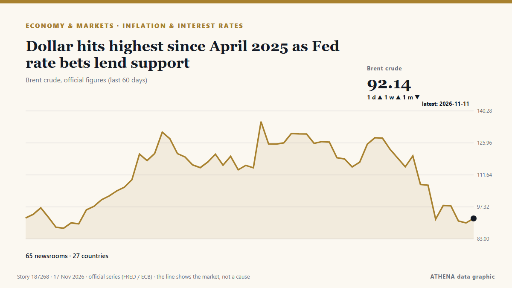

Économie, finance et marchés
SponsoriséPrésenté par  Cybernetics and Artificial Intelligence Lab Welcome to the Cybernetics and Artificial Intelligence Laboratory, established at the Department of Business Administration of the National and Kapodistrian University of Athens. The lab is headed by Professor Dimitrios Thomakos. The lab aims to do research that can be published in top venues. Our research uses tools and methods of Artificial Intelligence, and lies in the following areas: - Forecasting - Decision making - Cyber security - Finance We are always looking forward to collaborating with exceptional students!
Cybernetics and Artificial Intelligence Lab Welcome to the Cybernetics and Artificial Intelligence Laboratory, established at the Department of Business Administration of the National and Kapodistrian University of Athens. The lab is headed by Professor Dimitrios Thomakos. The lab aims to do research that can be published in top venues. Our research uses tools and methods of Artificial Intelligence, and lies in the following areas: - Forecasting - Decision making - Cyber security - Finance We are always looking forward to collaborating with exceptional students!
Les titres sont affichés en anglais, tels que publiés.
Veille des marchés - chiffres officiels
Dans quel sens évoluent les indicateurs officiels des marchés - hausse, baisse ou stabilité - avec la dernière valeur officielle et sa date, et l'actualité des marchés vérifiée par ATHENA. Valeurs officielles, pas des cours en temps réel.
Énergie
| 1 jour | 1 semaine | 1 mois | Valeur officielle | |
|---|---|---|---|---|
| Brent crude | ▲ | ▲ | ▼ | $92,14/bblDonnées officielles du 11 nov. 2026 |
| WTI crude | ▬ | ▼ | ▼ | $89,62/bblDonnées officielles du 11 nov. 2026 |
| US natural gas (Henry Hub) | ▬ | ▲ | ▼ | $3,00/MMBtuDonnées officielles du 11 nov. 2026 |
| European natural gas (1 mois · 3 mois · 12 mois)(1M · 3M · 12M) | ▲ | ▲ | ▲ | $25,49/MMBtuDonnées officielles du 1 sept. 2026 |
| Coal (Australia) (1 mois · 3 mois · 12 mois)(1M · 3M · 12M) | ▲ | ▲ | ▲ | $153,84/tDonnées officielles du 1 sept. 2026 |
Alimentation
| 1 mois | 3 mois | 12 mois | Valeur officielle | |
|---|---|---|---|---|
| Wheat | ▲ | ▲ | ▲ | $246,85/tDonnées officielles du 1 sept. 2026 |
Bourses américaines
| 1 jour | 1 semaine | 1 mois | Valeur officielle | |
|---|---|---|---|---|
| S&P 500 | ▼ | ▲ | ▼ | Direction seulement (indice © Cboe)Données officielles du 13 nov. 2026 |
| Nasdaq Composite | ▼ | ▲ | ▼ | Direction seulement (indice © Cboe)Données officielles du 13 nov. 2026 |
Taux, risque et dollar
| 1 jour | 1 semaine | 1 mois | Valeur officielle | |
|---|---|---|---|---|
| US 10-year Treasury yield | ▲ | ▲ | ▼ | 5,15 %Données officielles du 13 nov. 2026 |
| Market volatility (VIX) | ▲ | ▼ | ▲ | Direction seulement (indice © Cboe)Données officielles du 13 nov. 2026 |
| US dollar, broad index | ▬ | ▲ | ▲ | 122,65Données officielles du 13 nov. 2026 |
L'euro face aux autres monnaies
| 1 jour | 1 semaine | 1 mois | Valeur officielle | |
|---|---|---|---|---|
| EUR/USD | ▼ | ▼ | ▼ | 1,1014 USDDonnées officielles du 16 nov. 2026 |
| EUR/GBP | ▼ | ▬ | ▼ | 0,8345 GBPDonnées officielles du 16 nov. 2026 |
| EUR/CHF | ▼ | ▲ | ▼ | 0,9244 CHFDonnées officielles du 16 nov. 2026 |
| EUR/JPY | ▼ | ▼ | ▼ | 175,78 JPYDonnées officielles du 16 nov. 2026 |
| EUR/CNY | ▼ | ▼ | ▼ | 7,3425 CNYDonnées officielles du 16 nov. 2026 |
| EUR/TRY | ▼ | ▼ | ▼ | 55,502 TRYDonnées officielles du 16 nov. 2026 |
| EUR/NOK | ▬ | ▲ | ▼ | 10,5740 NOKDonnées officielles du 16 nov. 2026 |
Sources : Energy Information Administration des États-Unis (pétrole, gaz américain), FMI (gaz européen, charbon, blé), Trésor et Réserve fédérale des États-Unis (taux à 10 ans, indice du dollar) Cboe (VIX), S&P Dow Jones Indices (S&P 500) et Nasdaq (Nasdaq Composite), via FRED (Réserve fédérale de Saint-Louis) ; taux de référence de l'euro © Banque centrale européenne. Les chiffres sont les dernières valeurs officielles avec leur date, pas des cours en temps réel. Les directions sont calculées par ATHENA.
Crypto, ETF et actions dans l'actualité
- Seoul stocks open tad lower ahead of Nvidia earnings, key events Risque 2.1 17 nov.
- Peraire-Bueno brothers acquitted of wire fraud in $25 million Ethereum MEV case Risque 0.0 17 nov.
- Bitcoin's $2 Billion Liquidation Weekend Leaves Traders Watching $60,000 Risque 1.5 16 nov.
- ASX dips lower, Nvidia scandal weighs on Wall Street Risque 2.0 16 nov.
- Hackers Redirected Bitcoin Miner Rewards via AI Attack, Luxor CEO Says Risque 5.1 16 nov.
- Intel facing lawsuit after 29% stock plunge Risque 5.1 16 nov.
- Stocks Extend Losses as Traders Digest Nvidia Fallout Risque 1.2 16 nov.
- Mahanadi IPO explained: Valuation, reserves, risks and Coal India strategy Risque 0.0 16 nov.
- Russell Brand’s wife shares message from disgraced comedian in prison Risque 3.0 16 nov.
- Financials lead Indian shares higher as foreign inflows hit monthly peak Risque 2.2 16 nov.

Inflation et taux d'intérêtDollar hits highest since April 2025 as Fed rate bets lend support
The dollar strengthened on Monday to its highest level against a basket of currencies since April 2025, remaining supported by last week's strong inflation data and hawkish Fed commentary. de The Korea Times
| 4 nov. | 114 |
|---|---|
| 5 nov. | 118 |
| 6 nov. | 95 |
| 7 nov. | 42 |
| 8 nov. | 65 |
| 9 nov. | 155 |
| 10 nov. | 129 |
| 11 nov. | 129 |
| 12 nov. | 113 |
| 13 nov. | 71 |
| 14 nov. | 40 |
| 15 nov. | 57 |
| 16 nov. | 81 |
| 17 nov. | 0 |
Bitcoin's $2 Billion Liquidation Weekend Leaves Traders Watching $60,000
Bitcoin fell near $62,100 as forced liquidations swept crypto markets. de Decrypt
Gold falls as upcoming Fed rate hike weighs
Loses Rs2,000/tola on global price slide; rupee inches up. de Express Tribune
Oborevwori presents N1.23trn 2027 appropriation bill, earmarks N320bn for roads
The News Agency of Nigeria reports that the proposal comprises ₦806.8 billion for capital expenditure and ₦430 billion for recurrent expenditure. de Premium Times
Intel facing lawsuit after 29% stock plunge
Intel has been sued by shareholders who accused the US chipmaker of defrauding them by concealing the impact of a prolonged slowdown in personal computer sales that caused its stock price to plunge… de RTÉ News
Russell Brand’s message from behind bars was ‘disgusting’ – Ed Miliband
Brand’s wife, Laura Gallacher, read a message from her rapist husband in a video uploaded to their YouTube channel. de The Irish News (Belfast)
Dangote challenges Ghana to tap into West African market of 450 million people, boost local production
Nigerian business magnate Aliko Dangote has urged Ghana to look beyond its domestic market and position itself to exploit the vast commercial opportunities across West Africa, saying the country has… de MyJoyOnline
Global economy 'standing on one leg' as AI financing risks mount: IMF chief
Over $1T in circular financing among AI firms, much of it debt-funded, could pose risks if investor confidence weakens, Kristalina Georgieva warns. de Anadolu Agency (English)
China's fixed-asset investment down 8.1 pct in first 10 months
A deepening reliance on external demand leaves China more exposed to shocks abroad as domestic momentum fades, analysts say. de CNBC World
Brussels will present plan for €45B Ukraine loan backed by EU budget
The loan aims to keep Ukraine financially afloat in the coming year — and it needs the backing of all EU leaders. de Politico Europe
President of Uzbekistan meets with investors, business leaders
MUSCAT: President Shavkat Mirziyoyev of the Republic of Uzbekistan met on Monday at Al Alam Palace with a group of investors and business leaders. de Oman Observer
US condemns Iran, Houthi attacks on Saudi Arabia, demands end to escalation
The United States has condemned Iranian attacks against regional neighbours and continued Houthi strikes targeting Saudi Arabia, calling for an immediate halt to military escalation and renewed… de People Daily
Mahanadi IPO explained: Valuation, reserves, risks and Coal India strategy
Mahanadi Coalfields, Coal India's largest coal-producing subsidiary, is set to enter the stock market through an offer for sale of a 10% stake. de Business Standard
Pharmacist warns Ozempic and Wegovy users 'should go A&E' over side effect
A popular TikTok pharmacist has highlighted a rare but serious condition that can affect your daily life. de WalesOnline
Dominican Republic, Puerto Rico launch joint campaign to boost multi-destination tourism
By THE STAR STAFF The Dominican Republic’s Ministry of Tourism and Puerto Rico’s external promotion organization, Discover Puerto Rico, have officially launched a joint tourism initiative titled… de The San Juan Daily Star
Benchmark rate for banks' mortgage loans continues to rise
SEOUL, Nov. 16 (Yonhap) -- The benchmark rate for banks' mortgage rates increase... de Yonhap (English)
Anthropic's record IPO faces some big questions
The San Francisco-based firm faces three threats, with rivals catching up, prices collapsing and bills continuing to climb. de Free Malaysia Today
Japanese Yen trims previous gains as weak Japanese GDP data holds bulls
The Japanese Yen (JPY) posts marginal gains against the US Dollar (USD) on Monday but is pulling back from session highs as the downbeat Japanese Gross Domestic Product (GDP) data seen earlier in the… de FXStreet
The 10 biggest stock market IPOs
WASHINGTON: Anthropic, the developer of the Claude chatbot, is set to start trading on Wall Street on Thursday. de New Straits Times
‘Escaping extreme poverty and Naxalism has improved tribal lives’, says PM Modi
PM cites World Bank report to claim that 50 crore Indians have escaped extreme poverty over last 12 to 13 years; says 125 districts were Naxal-affected in 2014, as previous regimes closed their eyes… de The Hindu
Iran facing one of fastest economic collapses ever, Bessent says
US Treasury Secretary Scott Bessent said on Sunday that Iran was experiencing one of the fastest economic collapses in history, as Washington expanded its pressure campaign beyond a naval blockade to… de Iran International (English)
Gold and silver prices rise on commodity markets
Gold and silver prices have risen on the COMEX commodity exchange in New York. de AzerNews
Japan's economy contracts annualised 0.1% in July-September
Weak consumer spending and record-breaking rains damp GDP growth and complicate interest rate plans. de Financial Times - Global economy
China’s retail sales growth slows in October
The 0.4% year-on-year increase also missed the 0.8% forecast despite a week-long holiday, highlighting challenges in kickstarting consumer activity. de Free Malaysia Today
Thailand's GDP growth picks up to 2.9% in Q3 on strong exports
The country attracted a surge in investment tied to AI, data centres and advanced electronics. de The Business Times
Asian shares fall before Nvidia earnings, Anthropic IPO test tech rally
Nvidia’s market value tumbled from US$5.8 trillion in early October to US$3.9 trillion as investors rushed to exit following Jensen Huang’s departure. de Free Malaysia Today
Japan economy shrinks 0.1% in Q3, first fall in 4 quarters as inflation hits households
The pushback from economists matters more for markets than the headline miss. de investingLive (ForexLive)
BoE policymaker refuses to rule out back-to-back rate rises
Clare Lombardelli says high energy prices and resilience of UK growth mean there is a case for a further increase ‘in the near term’ de Financial Times - Global economy
Israeli military jeep runs over, injures 2 Palestinians in occupied West Bank
Troops beat Palestinian workers in Bethlehem governorate while Israeli occupiers attack home and damage property elsewhere. de Anadolu Agency (English)
Japan services activity expands for fifth month: PMI
New orders increased for a 28th straight month. de The Business Times
Pakistan could become world’s sixth-largest economy before 2050: PM Sharif
Dubai: Pakistan could become the world’s sixth-largest economy before 2050, Prime Minister Shehbaz Sharif said on Friday as he called for foreign investment in mineral processing and manufacturing. de Gulf News
Yellow Weather Warning Issued for Heavy Rainfall in Two Regions of Bulgaria
Bulgaria’s national meteorological bureau has issued the Code Orange warning of dangerous weather for several districts for November 13 because. de The Sofia Globe
Dubai Police bust gang who recruited people to open bank accounts for investment fraud
Dubai Police have arrested members of a gang accused of investment fraud. de Khaleej Times (working feed)
West Bank: Israeli settlers attack Palestinian home, olive harvesters
JENIN: Settlers attacked Palestinian families from the town of Ya’bad, west of Jenin, on Friday while they were harvesting olives, local sources reported. de Arab News
AI retreat fuels India's stock market comeback in great rotation trade
The MSCI India gauge has rebounded 11% from a six-month low set in October, adding more than $400 billion in value and almost erasing this year's losses. de Business Standard